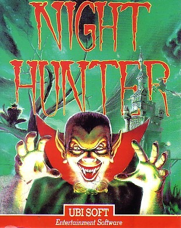
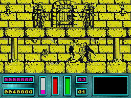

Night Hunter


{kind=link}

| Publisher: | UbiSoft |
| Price: | £9.99 / £14.99 |
| Year: | 1990 |
| Source: | CRASH, Issue 79 |

A vampire, as we all know, is an undead creature that preys on the living. Until recently mankind has been saved by several holy medallions and the tireless work of Professor Van Helsing — but now the most feared vampire of all, Count Dracula, is after the medallions. And here’s the twist: in most games you play the hero, but not so here. You are Dracula, and you also have the ability to change into a bat or a werewolf. It’s as Dracula you can do the most damage though — suck the blood of Van Helsing’s minions as they chase you round your castle (slurp)!

Throughout the different levels of the game you must collect eight objects including a scroll, a bottle, a cross and five keys in order to escape. Van Helsing’s minions chase and try to kill you using a crucifix or stake, unless you’re a wolfie when they fire silver bullets. With every hit your energy bar goes down, but catching a human and biting him in the neck is very nourishing. When you’ve found all the necessary objects you come face to face with Van Helsing as a final end of level foe — and he’s difficult to kill. Seeing as how Dracula never wins in the horror movies, it’s about time you changed all that!
As a fan of Christopher Lee and Peter Cushing Hammer horror films I’ve always wondered what it’s like to play the bad guy. Well, Night Hunter from Ubisoft is the perfect chance! Wander around spooky castles and bite the necks of beautiful maidens! Night Hunter is great fun to play, but only after dark.
MARK — 90%
Woooo! Creepy stuff this! It’s full of vampires, werewolves and witches. A bit like walking around Ludlow at midnight! I really like Night Hunter. Though the graphics are all yellow monochrome, it’s a ruddy good game and incredibly addictive! Starting off as a vampire with a quest to collect all the keys and scrolls from each level, you have the option to change into either a werewolf or bat to help you through the game. Start in the castle and progress through towns, other buildings, graveyards etc: each location is highly detailed, and the people chasing you are varied enough to keep you on your toes. Especially the blokes with stakes ready to plunge through your heart (ouch!). Night Hunter is simply a must for all fans of addiction. Miss this and you won’t sleep easy in your bed. Come to think of it, play this and you still won’t be sleeping easy!!
NICK — 93%
RATING
Do the Transylvania Twist with this — good enough to sink your teeth into!
| Presentation: | 87% |
| Graphics: | 85% |
| Sound: | 75% |
| Playability: | 90% |
| Addictivity: | 92% |
| Overall: | 91% |